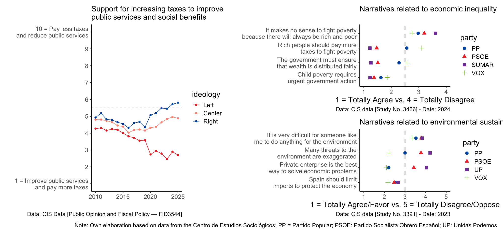

Project Context: Political Polarization around Welfare and Sustainability
This section illustrates the sociopolitical landscape that motivates the NARWEL project.
Polarization has increased over the last few years, shaping how citizens evaluate welfare and sustainability
policies. Understanding this context is essential to designing effective interventions that build support for
initiatives to address societal challenges, such as poverty, inequality, and sustainability.

Figure 1. CIS data showing how political polarization has increased in Spain.
This figure highlights how political orientation shapes support for core public policies, revealing clear
ideological divides—but also areas of unexpected consensus. While left- and right-leaning groups diverge
sharply on taxation, redistribution, and climate concerns, they converge on priorities like reducing child
poverty and protecting the national economy. Mapping these points of conflict and agreement is crucial for
fostering more constructive policy dialogue in polarized contexts.